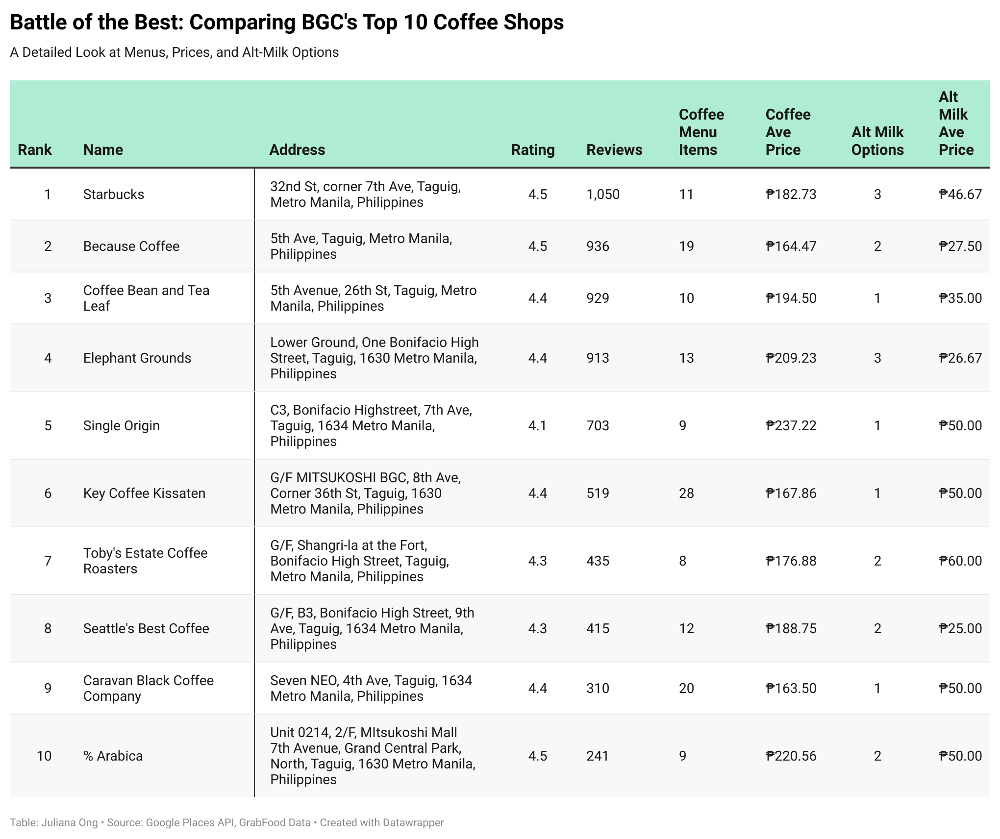

Coffee might just be the most consumed beverage (next to water) in the world.
This is especially true in the Philippines, where the average Filipino consumes an
impressive 3.05 kilograms of coffee per person (that's as heavy as a small dumbbell)!
By 2025, this number is expected to rise another 23% – a clear indicator of coffee's place
as an ever-expanding necessity in the Philippines.
Bonifacio Global City (BGC), a bustling business district in the capital region, is no
exception. With almost 200 coffee businesses vying for the attention of the area's coffee
enthusiasts and office workers, the competition among coffee shops in BGC is fierce.
To uncover which coffee shops reign supreme, we delve into data considering factors
like popularity, menu variety, affordability, and alternative milk options. This comprehensive
analysis reveals who truly stands out in the city's vibrant coffee scene.
According to the map above displaying the most notable coffee shops in the district, it's clear that certain brands
hold a strong lead. Coffee behemoths like Starbucks and Coffee Bean & Tea Leaf often top
the charts, thanks to their global brand recognition and ubiquitous presence. Meanwhile, viral sensations such as
Because Coffee and % Arabica also make their mark as frontrunners in the city's most popular coffee locations.

The decisive list of Top 10 "most popular" coffee shops was derived from Google Places
data on each coffee-serving establishment in BGC. Popularity here is measured by
combining a business' overall rating and review count into a weighted average of 6:4,
respectively. This formula made up a business' popularity score, which was then ranked
and narrowed down to the Top 10 contenders.
By using this approach, we ensure that both the quality and quantity of reviews are
considered, providing a balanced view of each café's standing in the industry. Data
on menu variety, affordability, and alternative-milk friendliness is also displayed
alongside to provide a well-rounded view of the coffee shops' offerings.
Popularity, however, isn't everything. A deeper dive into the data reveals an intriguing
disparity between some coffee shop's fame and menu quality. The range plot above showcases this dynamic,
with the yellow dot representing popularity and the green dot depicting menu quality. The longer
the distance between the points, the bigger difference (and dissonance) in scores between these two variables.
Notably, some outliers and lesser-known gems strike our attention. For instance, Key Coffee –
one of Japan's oldest coffee roasters, offers an extensive menu of 28 coffee items at an average price of P168 / cup,
challenging the notion that you need to splurge for good quality.
As more people seek dairy-free alternatives, coffee shops in BGC are stepping up their
game. The stacked bar-chart above highlights cafes leading the charge in terms alt-milk friendliness.
Spots like Elephant Grounds and Seattle's Best excel in offering a
wide range of alternative milk options at affordable prices. This trend is not
just a nod to dietary preferences but also a testament to evolving consumer demands
for inclusive and varied choices.
But what truly makes a coffee shop superior from the rest? A revisit to the data
suggests that there is no singular winner-takes-all; popularity is
not necessarily tied to menu quality or alt-milk friendliness.
While objective data like price and menu options matter, our coffee shop choices
are also deeply personal. Sometimes, it's the intangible factors that build a
brand—the friendly barista who knows your name, the Instagrammable latte art, or the strategic location
near your office. Frequenting popular cafes can also signal a sense of belonging
or align with social media trends, imparting a sense of a community, showcasing a lifestyle,
or simply following the crowd.
This data serves as a springboard for introspection. Why do we favor certain spots over
others? Do we choose coffee shops based on objective factors or social cues? And,
based on the data above, are there newly discovered coffee shop gems to add into our roster?
Our exploration of BGC's coffee shops reveals key insights: popularity is multifaceted,
menu variety and affordability are crucial, and alt-milk options are on the rise. Yet,
beyond these objective measures, sociological factors and personal preferences also shape
our choices.
As we navigate the rest of the country's vibrant coffee scene, let us be mindful of what
draws us to our favorite spots and acknowledge both the tangible and intangible factors at play.
Whether you're a regular at a popular chain or a seeker of hidden gems, understanding
the nuances behind our preferences can enrich our coffee experience.